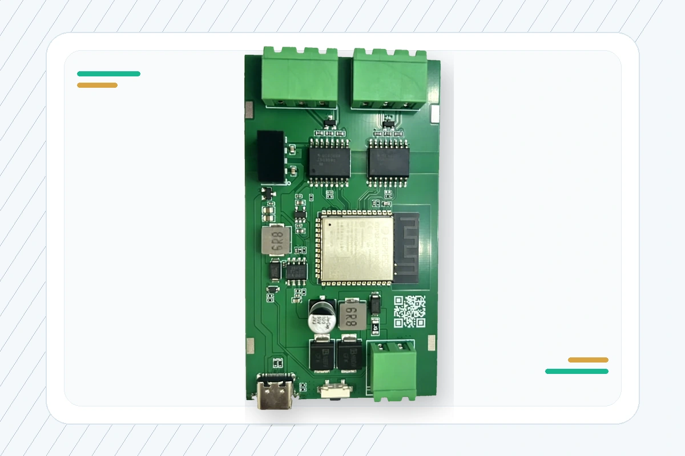
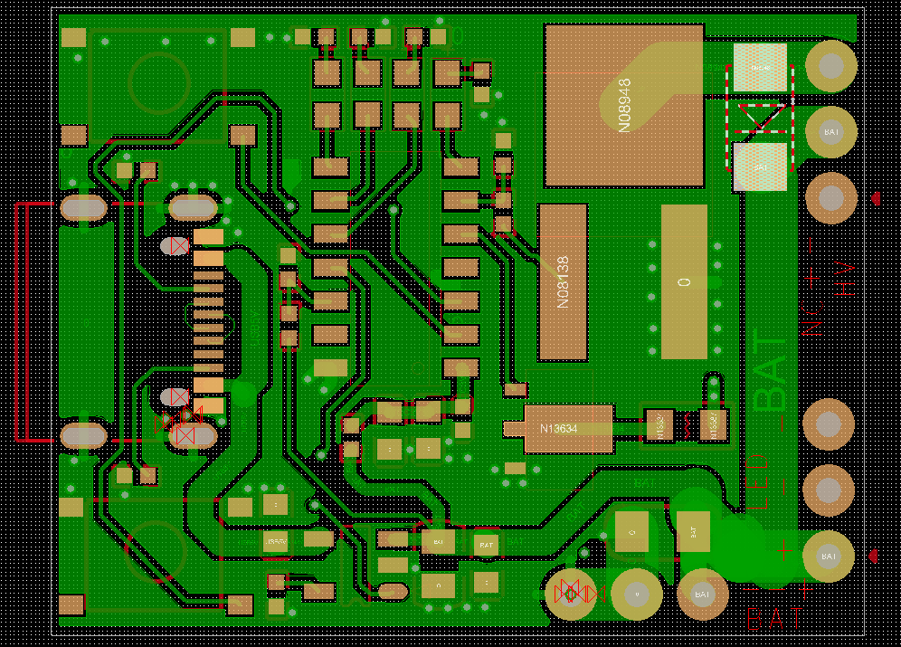
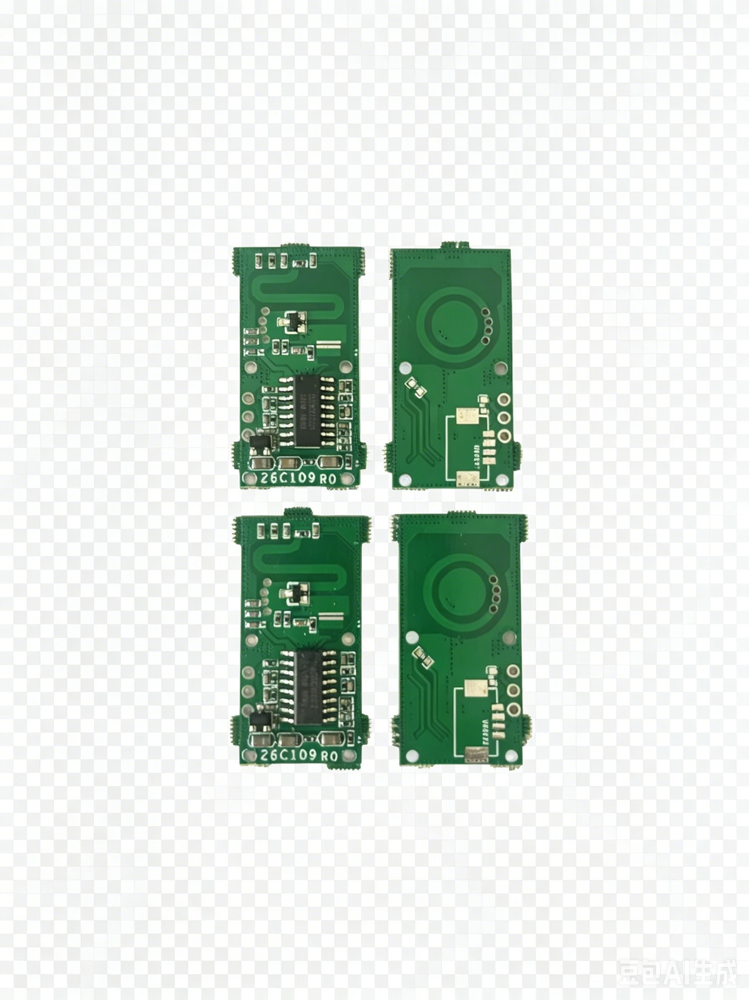
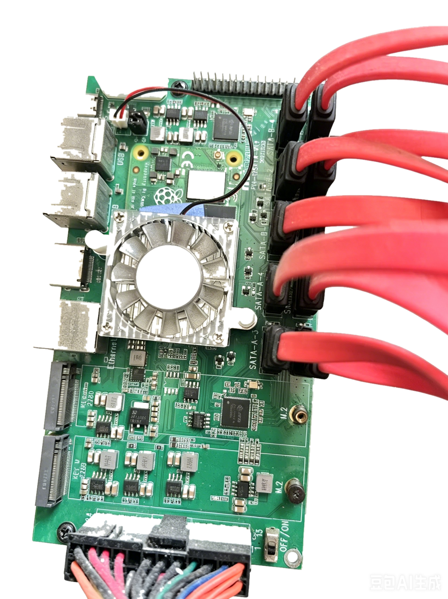
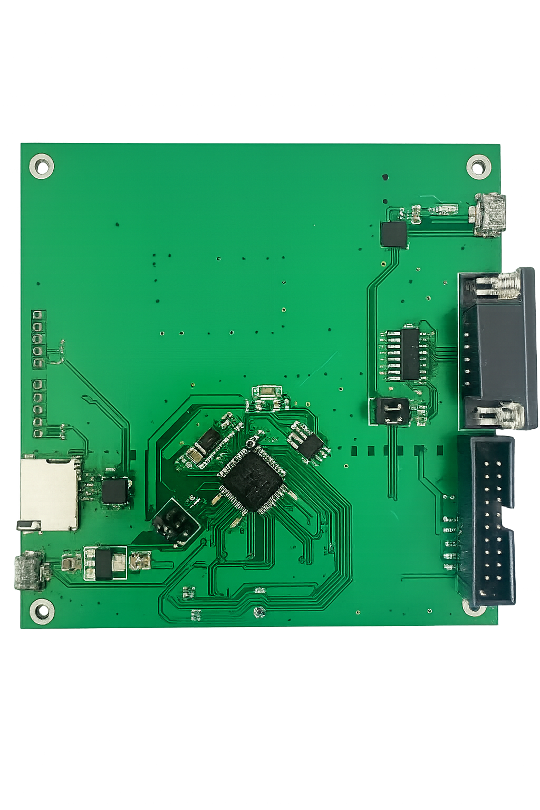
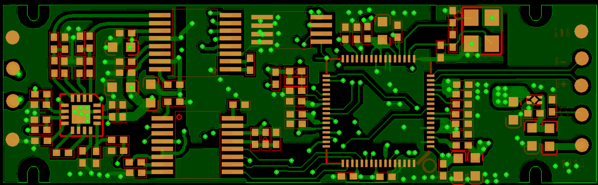
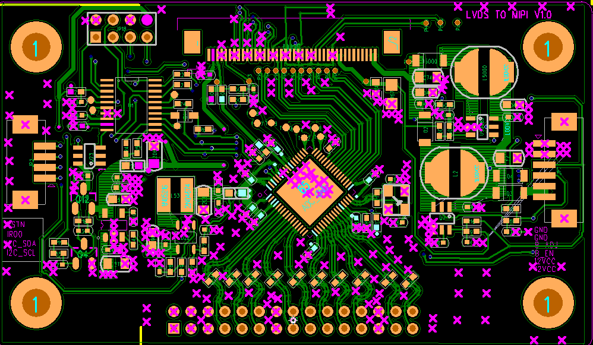
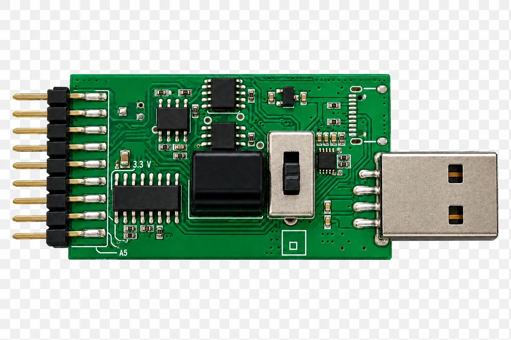

Comunicación industrial
Hardware abierto

Comunicación industrial

Prototipo de alto voltaje

Detección de movimiento

Almacenamiento en red

Desarrollo MCU

Control electrónico de plagas

Audio USB

Interfaz de pantalla

Electrónica de potencia

Herramienta de interfaz serie

Conmutación y expansión USB
Guia de envio
Para que los proyectos de XXboard sean faciles de ver, descargar y fabricar, prepare imagenes, documentacion, fuentes y archivos de fabricacion.
Recomendado 1200 × 800 px, relacion 3:2, WebP / JPG / PNG, idealmente menos de 500 KB y maximo 1 MB.
Recomendado 1600 × 1000 px, maximo 2 MB por imagen. Use fotos, renders, capturas PCB o vistas de montaje.
Recomendado 1200 × 630 px para redes, GitHub, chats y vista previa de enlaces.
README.md es obligatorio. PDF preferiblemente bajo 10 MB con resumen, funciones, pinout, uso y notas de construccion.
Carpetas recomendadas: /hardware, /images, /docs, /firmware, /mechanical. Gerber ZIP preferiblemente bajo 20 MB.
KiCad / Altium / CAD preferiblemente bajo 50 MB. Evite mas de 100 MB; use enlaces externos para videos grandes.
Estructura sugerida: README.md, /images, /docs, /hardware, /firmware, /mechanical y LICENSE. Incluya licencia, estado y enlace del repositorio.